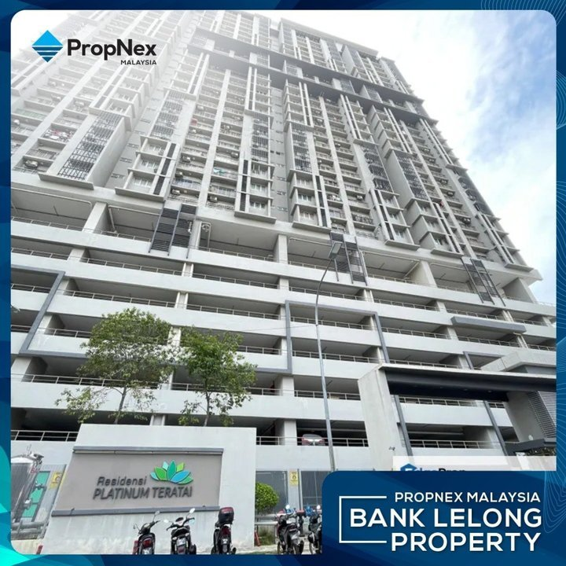
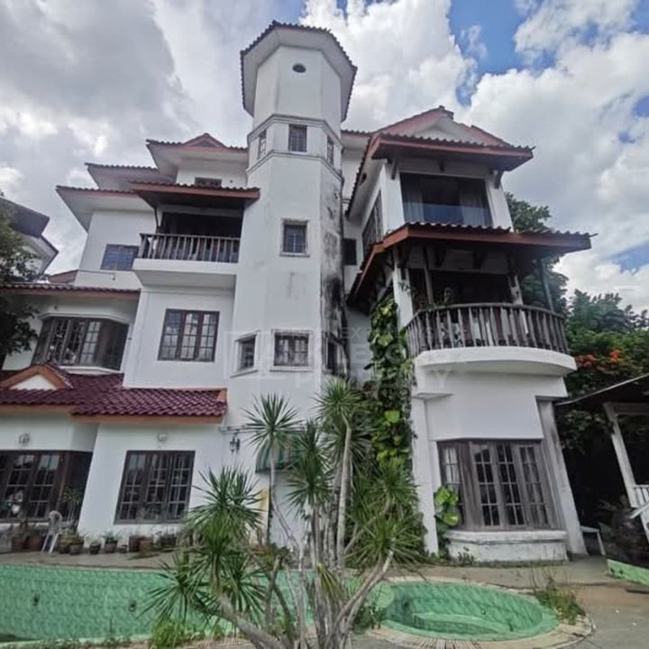

吉隆坡 Sri Hartamas，Plaza Damas 3 服务式公寓
- 拍卖价
- RM21.9 万
- 市值
- RM40 万
- 拍卖日期
- 2026 年 11 月
- 类型
- 服务式公寓
- 地契
- 永久地契
- 面积
- 建筑面积 600 平方尺
- 帖文只注明拍卖月份（2026 年 11 月）。请向 Jessica 查询确切日期。
资料最后更新：2026 年 10 月 23 日 · 来源：Selangorkl Properties · 2026 年 10 月 24 日核查：尚未找到公开拍卖官页面，请向 Jessica 确认
银行拍卖屋
银行拍卖屋的价格可能低于公开市场上的同类房产，但附带固定条件，反悔的余地也较小。Jessica 会在拍卖日前帮您把这两方面都弄清楚。
以上仅供一般参考。每场拍卖都有各自的销售条件，一切以其为准。竞拍前请先咨询律师。
最新拍卖单位
资料来自她的 Facebook 专页 Selangorkl Properties 及 PropNex Malaysia 银行拍卖屋群组，按拍卖日期排列（最近的在前）。Jessica 以注册房地产经纪身份推介这些拍卖单位，她并非拍卖官或银行。拍卖日期过后，单位即会下架。在 2026 年 10 月 24 日、27 日及 11 月 4 日、6 日、8 日、18 日进行的公开核查中，以下 12 个单位中有 9 个仍在公开的拍卖官或拍卖资讯网站上列为待拍卖，且没有任何一个显示已售出或撤回。其余 3 个未能找到最新的公开拍卖官页面，请向 Jessica 确认详情。每张卡片均注明各自的核查结果。本页最后更新：2026 年 11 月 25 日。
资料最后更新：2026 年 10 月 23 日 · 来源：Selangorkl Properties · 2026 年 10 月 24 日核查：尚未找到公开拍卖官页面，请向 Jessica 确认

资料最后更新：2026 年 10 月 23 日 · 来源：Selangorkl Properties · 2026 年 10 月 24 日核查：尚未找到公开拍卖官页面，请向 Jessica 确认
资料最后更新：2026 年 10 月 19 日 · 来源：Selangorkl Properties · 2026 年 10 月 24 日核查：仍列为待拍卖

资料最后更新：2026 年 10 月 23 日 · 来源：Selangorkl Properties · 2026 年 10 月 24 日核查：仍列为待拍卖

资料最后更新：2026 年 11 月 4 日 · 来源：PropNex Malaysia 银行拍卖屋群组 · 2026 年 11 月 4 日核查：仍列为待拍卖

资料最后更新：2026 年 10 月 23 日 · 来源：Selangorkl Properties · 2026 年 10 月 24 日核查：仍列为待拍卖

资料最后更新：2026 年 11 月 6 日 · 来源：PropNex Malaysia 银行拍卖屋群组 · 2026 年 11 月 6 日核查：仍列为待拍卖
资料最后更新：2026 年 10 月 25 日 · 来源：Selangorkl Properties · 2026 年 10 月 27 日核查：尚未找到公开拍卖官页面，请向 Jessica 确认

资料最后更新：2026 年 11 月 11 日 · 来源：PropNex Malaysia 银行拍卖屋群组 · 2026 年 11 月 8 日核查：仍列为待拍卖

资料最后更新：2026 年 11 月 11 日 · 来源：PropNex Malaysia 银行拍卖屋群组 · 2026 年 11 月 8 日核查：仍列为待拍卖
资料最后更新：2026 年 10 月 21 日 · 来源：Selangorkl Properties · 2026 年 10 月 24 日核查：仍列为待拍卖

资料最后更新：2026 年 11 月 6 日 · 来源：PropNex Malaysia 银行拍卖屋群组 · 2026 年 11 月 6 日核查：仍列为待拍卖
更多拍卖单位请见 Facebook 上的 Selangorkl Properties。拍卖日期过后，单位将从本页下架。
拍卖屋通知
告诉 Jessica 您想找的地区、房产类型和预算，请她把符合条件的最新银行拍卖屋通过 WhatsApp 发给您。她会通过 WhatsApp 回复。您可以随时要求停止。
会打开 WhatsApp 并附上一段简短讯息供您填写。想用表格？也可以填写下方的简短表格。
Jessica 项目资料库中注明出处和日期的项目资料页。
不一定。底价通常低于市值，但您可能还需支付拖欠的管理费或其他费用，而且产业是按现况出售。Jessica 会帮您把全部成本算清楚。
可以，许多银行都为拍卖屋提供融资，但贷款必须及时批出，才能赶上付款期限。请在拍卖日前先评估贷款资格。
有时只能从外面看，尤其是有人居住的单位。这也是需要仔细核查地契和销售条件的原因之一。
告诉她您在找什么，她会通过 WhatsApp 回复您。